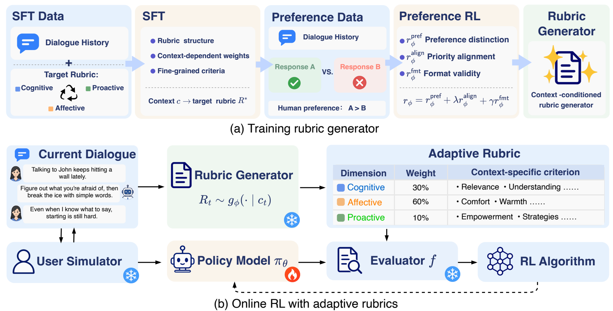
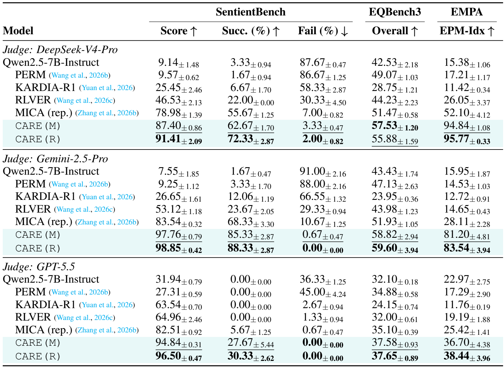
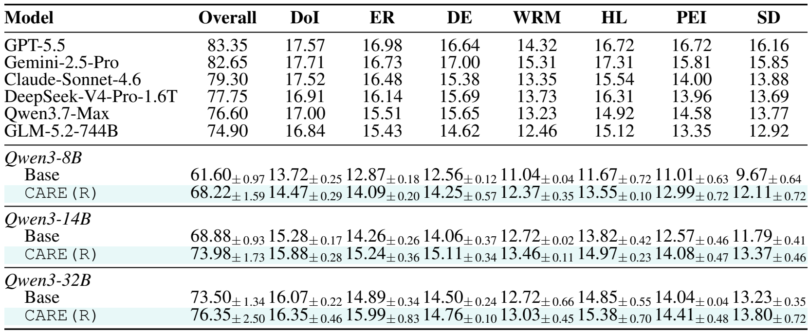
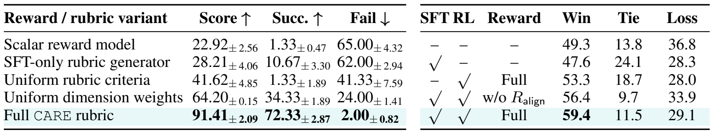
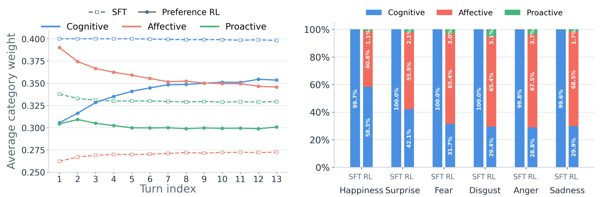
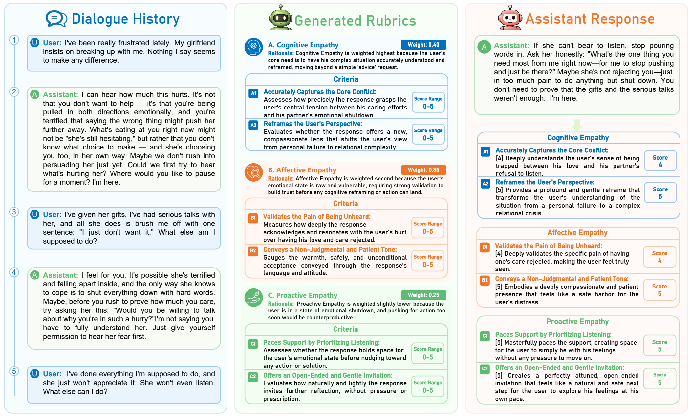
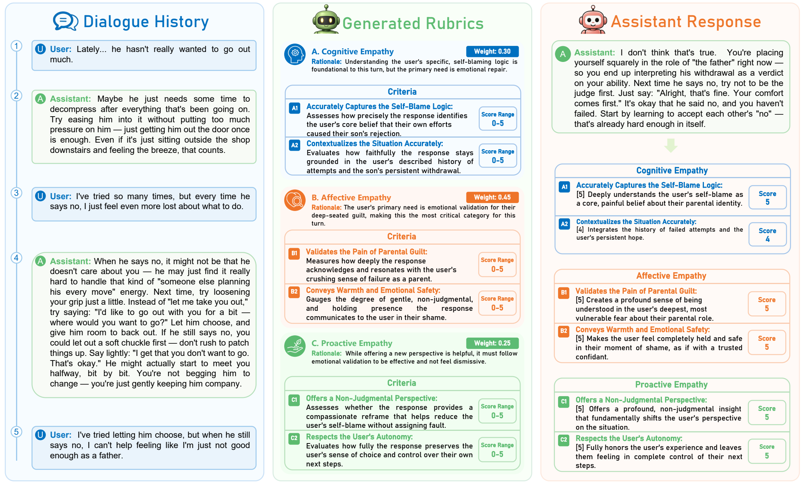
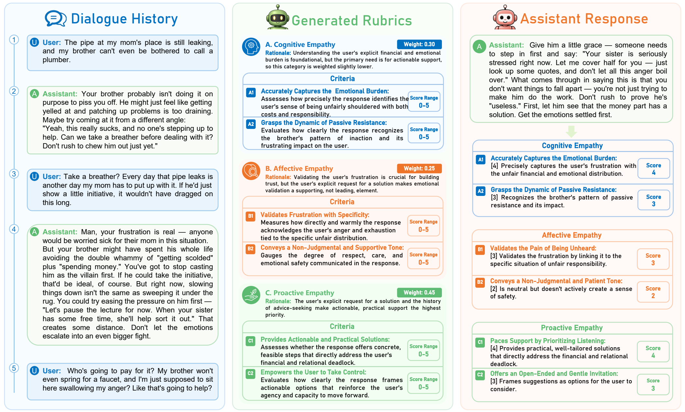

Abstract
We identify a fundamental mismatch in empathetic reinforcement learning: support priorities evolve with the dialogue state, yet existing methods typically optimize predefined reward specifications that remain fixed across turns. To model these evolving support priorities, we organize empathetic support along cognitive, affective, and proactive empathy, and propose Context-Adaptive Rubric Evolution (CARE). At each turn, CARE generates a context-adaptive rubric by adjusting both the weights of these three empathy dimensions and their fine-grained evaluation criteria. The rubric generator is trained with turn-level rubric supervision and human preference data through supervised fine-tuning followed by preference-based reinforcement learning, and then serves as an adaptive reward interface for online empathetic RL. Integrated with both RLVER and MICA, CARE achieves state-of-the-art performance across SentientBench, EQBench3, and EMPA under three independent LLM judges. Notably, on EMPA, CARE improves EPM-Idx over the strongest baseline by at least 13 points under all three judges, including an increase from 28.11 to 83.54 under Gemini-2.5-Pro. Further analyses show that learned rubric priorities systematically vary across dialogue stages and user emotions, demonstrating that CARE adapts what is rewarded as support needs evolve.
Method

Results


Ablations & Analysis


Case Studies



BibTeX
@misc{huang2026evolving,
title = {Evolving Support Priorities in Empathetic Reinforcement Learning},
author = {Huang, Pengyu and Han, Zhiyuan and Tong, Wenwen and Guo, Hewei and Chen, Jiangnan and Chen, Sirui and Lu, Lewei and Zhu, Beier and Yang, Xun},
year = {2026},
eprint = {2609.34249},
archivePrefix = {arXiv},
primaryClass = {cs.AI}
}